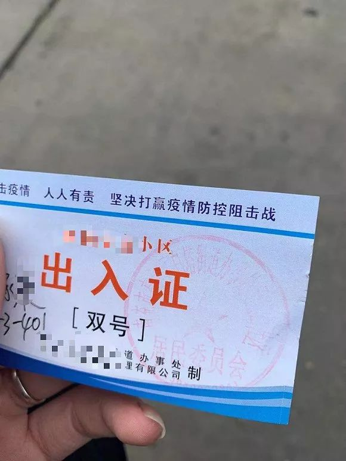

广州人大授权政府为疫情防控征用单位或个人财产
原文链接 备份链接 【财新网】（记者 方祖望）疫情防控期间，如遇到紧急情况，广州市及下辖区县政府有权征用单位或个人财产。2月11日，广州市人大常委会通过了《关于依法全力做好新冠肺炎疫情防控工作的决定》（下称市《决定》），赋予当地政府上述 …

记者：赵孟 汪畅（实习记者）
“
小区封闭式管理，是社区切断病毒的好办法，加强社区管理没有错，但是封闭小区的具体措施是值得考虑的。
”
2020年2月11日凌晨，武汉市新冠肺炎疫情防控指挥部第12号通告发布，决定自即日起在全市范围内所有住宅小区实行封闭管理。
界面新闻通过梳理发现，2月3日，杭州连夜紧急发布全城封闭式管理通知，此后封闭式管理在全国效仿开来。
随着疫情防控措施不断加码，目前已经有江苏、天津、福建、北京、重庆、广东等省市实行小区封闭管理。这些封闭管理的小区出入都要测体温，以派发“出入证”的方式，严控每天或每周进去小区的人数和次数。
公开信息显示，深圳等地的一些小区发放了“通行证”，重庆、昆明、哈尔滨、黄山的小区，封闭管理中限制了每户出入的人数，要求居民定期采购。安徽黄山市某小区并未有新型冠状病毒感染肺炎的确诊人员，但是规定除了需要上班的人员，一家只有一人能领取通行证，每两天能出门一次，出行的时间为两小时，快递也不让进。四川省南通市某小区则制定了单双日出行的规定。

封闭小区是否有法律依据？陕西恒达律师事务所高级合伙人、知名公益律师赵良善对界面新闻表示，封闭小区等措施，是当地政府在疫情特殊时期所采取的特殊措施，是为保障公共卫生安全和公众身体健康，这样必然牺牲部分个人利益，坚持公共集体利益高于个人利益的原则，封闭小区等措施是有必要的。
《传染病防治法》第四十二条规定，传染病暴发、流行时，县级以上地方人民政府应当立即组织力量，按照预防、控制预案进行防治，切断传染病的传播途径，必要时，报经上一级人民政府决定，可以采取下列紧急措施并予以公告：（一）限制或者停止集市、影剧院演出或者其他人群聚集的活动；（二）停工、停业、停课；（三）封闭或者封存被传染病病原体污染的公共饮用水源、食品以及相关物品；（四）控制或者扑杀染疫野生动物、家畜家禽；（五）封闭可能造成传染病扩散的场所。上级人民政府接到下级人民政府关于采取前款所列紧急措施的报告时，应当即时作出决定。紧急措施的解除，由原决定机关决定并宣布。
赵良善认为，法律赋予了当地政府采取措施切断传染病的传播途径的权力，比如封闭小区等措施。在执行中，由小区物业来落实执行。如因小区物业执行不力，导致新型冠状病毒传染的，可根据《治安管理处罚法》的有关规定，对小区物业的负责人进行治安处罚。
中国人民大学公共管理学院教授毛寿龙称，“新冠病毒太凶猛，小区封闭式管理，是社区切断病毒的好办法，加强社区管理没有错，但是封闭小区的具体措施是值得考虑的。”他认为，扫码进入小区、量体温等手段都没有问题，但是单双号限制进出、宵禁等措施是防控不专业的体现。
毛寿龙认为，小区封闭式管理指的是对流动人口的管理，目的应该在于早发现、早隔离和减少互相之间的串门，而不是限制进出。
尽管政府或物业公司封闭小区的行为合法，但赵良善提醒，政府在发布类似决定、命令时，要注意坚持所发布的决定、命令合法性、合理性、必要性，不能无限度地扩大其权力。“比如，制定决定、命令时，应严格依照《行政强制法》规定，程序需合法。据目前临床判断，新型冠状病毒在人体内潜伏为7到14天，每个人需自我隔离约14天，政府在发布决定、命令时，不能将隔离延长为1个月、或无限地延长期限。”
毛寿龙建议，在疫区的小区或者有确诊病例的小区里，应该密切监视，做好封闭管理，如有发现疑似患者，交由疾控中心获医院进行隔离。或者是流行病调查还未完成的小区，应该完全封闭做好调查，之后再进行一般性的封闭管理，如保安值守、出入量体温等。如果说小区内有人封闭式管理而延误病情，直接管理者应该负责。
中国人民大学公共管理学院教授刘鹏则指出，地方政府升级防控措施要有依据，不能过度反应。依据在于发现确诊案例或者确诊数量多，各地政府要出台相关内容对市民进行提示，否则不仅造成生活不便，还可能导致心理恐慌。
除了封闭小区，有些单位还通过抗疫、开会等形式进行抗疫。刘鹏提醒，防控既不能一刀切、简单粗暴，也不能形式主义。
未经授权 禁止转载

原文链接 备份链接 【财新网】（记者 方祖望）疫情防控期间，如遇到紧急情况，广州市及下辖区县政府有权征用单位或个人财产。2月11日，广州市人大常委会通过了《关于依法全力做好新冠肺炎疫情防控工作的决定》（下称市《决定》），赋予当地政府上述 …
原文链接 备份链接 【财新网】（记者 张兰太）新冠疫情仍在发展，然而年后企业复工、人员返程已经开始，如何在企业抓紧复工、人员加快流动的同时加强防控、避免疫情扩散，成为摆在各级政府、各个部门乃至每个企事业单位面前的一道难题。 人员返程，“硬 …
原文链接 备份链接 【财新网】（记者 张兰太 整理）新冠疫情来势汹汹，全国各地严阵以待，在中央统一部署之外，地方层层加码、各出奇招，有力推动了疫情的群防群控，不过一些地方的个别管控措施却失之过度、走了极端。随着年后开始复产复工，各级政 …
原文链接 备份链接 记者观察|中国式防疫 一个山东县城的“防控战” 2020-02-02 23:33 作者：陈茂利 来源：中国经营网 本报记者 陈茂利 山东报道 “通知我要求带着房产证和行车证来录入信息。”山东省某县城一小区住户告诉《中国 …
原文链接 备份链接 数百万人的返京潮将至，北京加强防控是情理之中。但将回来的人不加区分地拒之门外或自行隔离，令本该叫好的措施变了味儿 文 |《财经》记者 信娜 孙爱民 实习记者 朱贺 编辑 | 王小 封闭社区。春节后，面对数百万人从各地陆 …